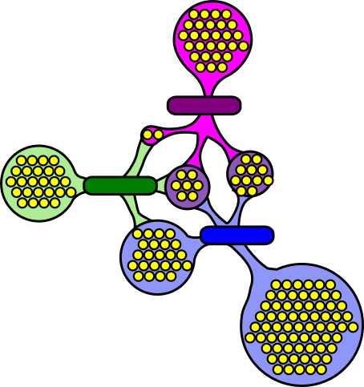

First steps with MPI#
What is MPI?#
MPI, for Message Passing Interface, is a message transmission interface.
It is not a programming language.
It is a specification for standardized libraries (from MPI 1.0 in 1994 to MPI 5.0 since June 2025).
The standard specifies library interfaces for C and Fortran.
There are different implementations: Open MPI, Intel MPI, etc.
Unofficial interfaces exist in other languages: Python, R, Perl and Java.
For example, mpi4py.
Structure of an MPI code#
In an MPI program, whether in C, Fortran, or Python:
We must first initialize the MPI execution environment. With the
mpi4pylibrary, this is done automatically when importing theMPImodule.At the end of the program, we must terminate the MPI execution environment. With the
mpi4pylibrary, this is done by callingMPI.Finalize().All other calls to MPI must be made between the above operations.
#!/usr/bin/env python
from mpi4py import MPI # MPI.Init() is called implicitly
def main():
"""
Main program
"""
# Parallel code
MPI.Finalize()
if __name__ == '__main__':
main()
Explicit parallelization#
It’s the programmer’s responsibility to tell which process should do what depending on its rank in the group of processes.
Each process passes messages with the others when needed.
A program that calls the MPI library hence most often uses the SPMD (Single Program, Multiple Data) concept.
Communicators#
A communicator refers to a group of processes that can communicate together.
The majority of MPI functions are called with a communicator to know which group is used.
With
mpi4py, theMPI.COMM_WORLDcommunicator exists by default and contains all processes.In more advanced use, other communicators can be created.

Number of processes and a unique rank#
Within the SPMD framework, a process must know the total number of processes and its rank within the communicator.
The number of processes is commonly called
size, like the size of the communicator.The
rankis a unique identifier for the process, a value between0andsize-1, inclusively.Using
mpi4pyand the default communicator, here is how to get the values ofrankandsize:comm = MPI.COMM_WORLD rank = comm.Get_rank() size = comm.Get_size()
Note
If there is a name conflict with another size variable in your code,
you can use nranks instead.
In the file
~/mpi201-main/lab/hello_world/hello.py, we have the following code:
#!/usr/bin/env python
from mpi4py import MPI # MPI.Init() is called implicitly
def main():
"""
Main program
"""
rank = MPI.COMM_WORLD.Get_rank()
nranks = MPI.COMM_WORLD.Get_size()
print(f"Hello, I'm process {rank} of {nranks}")
MPI.Finalize()
if __name__ == '__main__':
main()
MPI Environment#
To use MPI in Python in the Linux environment of the cluster, two modules must be loaded:
A module for compiling and running an MPI program is loaded by default (
openmpi). To see all loaded modules:[alice@narval1 ~]$ module list Currently Loaded Modules: 1) CCconfig 6) ucx/1.14.1 11) flexiblas/3.3.1 2) gentoo/2023 (S) 7) libfabric/1.18.0 12) blis/0.9.0 3) gcccore/.12.3 (H) 8) pmix/4.2.4 13) StdEnv/2023 (S) 4) gcc/12.3 (t) 9) ucc/1.2.0 5) hwloc/2.9.1 10) openmpi/4.1.5 (m)
An
mpi4pymodule is also required, but it is not loaded by default. You can search for a suitable version using the commandmodule spider:[alice@narval1 ~]$ module spider mpi4py ------------------------------------------------------------------------- mpi4py: ------------------------------------------------------------------------- Versions: mpi4py/3.0.3 mpi4py/3.1.2 mpi4py/3.1.3 mpi4py/3.1.4 mpi4py/3.1.4 (E) mpi4py/3.1.6 mpi4py/4.0.0 mpi4py/4.0.3
[alice@narval1 ~]$ module spider mpi4py/4.0.3 ------------------------------------------------------------------------- mpi4py: mpi4py/4.0.3 ------------------------------------------------------------------------- Description: MPI for Python (mpi4py) provides bindings of the Message Passing Interface (MPI) standard for the Python programming language, allowing any Python program to exploit multiple processors. Properties: Tools for development / Outils de développement You will need to load all module(s) on any one of the lines below before the "mpi4py/4.0.3" module is available to load. StdEnv/2023 gcc/12.3 openmpi/4.1.5
Since we already have all the required dependencies, we can then load
mpi4pyinto the environment. Note: apythonmodule will be loaded automatically.[alice@narval1 ~]$ module load mpi4py/4.0.3 [alice@narval1 ~]$ module list Currently Loaded Modules: 1) CCconfig 6) ucx/1.14.1 11) flexiblas/3.3.1 2) gentoo/2023 (S) 7) libfabric/1.18.0 12) blis/0.9.0 3) gcccore/.12.3 (H) 8) pmix/4.2.4 13) StdEnv/2023 (S) 4) gcc/12.3 (t) 9) ucc/1.2.0 14) python/3.11.5 (t) 5) hwloc/2.9.1 10) openmpi/4.1.5 (m) 15) mpi4py/4.0.3 (t)
Compiling an MPI program#
While a program in C or Fortran requires compilation before it can be executed, a Python script is compiled during its execution.
How to run an MPI program#
Launching an MPI program is typically done using an mpirun or mpiexec
command. For example:
mpiexec -n 120 python script.py
The command above would launch 120 identical processes, each running
python on a single processor. With the Slurm scheduler, we will instead use the srun
command. For example:
[alice@narval1 ~]$ srun -n 10 hostname
compute-node2
compute-node2
compute-node2
compute-node2
compute-node2
compute-node1
compute-node1
compute-node1
compute-node1
compute-node1
Exercise #1 - First MPI code#
Objective : running a first MPI code.
Instructions
Go to the exercise directory with
cd ~/mpi201-main/lab/hello_world.Validate the modules and load any missing modules, if necessary:
[alice@narval1 hello_world]$ module list [alice@narval1 hello_world]$ module load mpi4py/4.0.3
With
srun, launch 4pythonprocesses with thehello.pyscript:[alice@narval1 hello_world]$ srun -n 4 python hello.py Hello, I'm process 3 of 4 Hello, I'm process 2 of 4 Hello, I'm process 0 of 4 Hello, I'm process 1 of 4
Note
As seen in this exercise, the order in which results are displayed may vary due to the simultaneous execution of different processes: their duration may vary and the operating system may sometimes slightly give more CPU time to certain processes.
Communications via MPI#
Here is some information to know before programming any communication.
Data types
Types of communication
Point-to-point: two processes of the same communicator communicate pair-wise by means of sending and receiving.
Collective: all processes in a communicator call the same collective function and communicate at the same time.